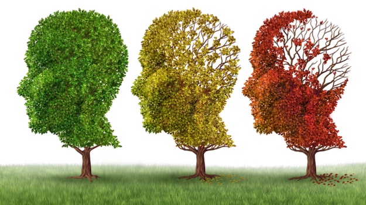

Description
As Europe’s population ages, the burden of Alzheimer’s disease and related dementias (ADRD) is expected to grow, despite a decreasing incidence of the disease. Predicting future trends and understanding their implications is challenging due to changing risk factors and the varied impact of the disease across different countries. Dementia rates differ significantly among European nations. To effectively study future disease burden and estimate the effects of new treatments, advanced tools are needed for accurate disease progression modeling. This project, in collaboration with researchers from Masaryk University, Brno, will introduce a new ADRD module to the European Future Elderly Model (EUFEM), a dynamic simulation tool that includes key risk factors likely to affect ADRD rates. EUFEM simulates health trends in Europe’s older population. Adding the ADRD module will allow for consistent projections, taking into account major factors influencing future ADRD rates, thus supporting research and policy-making. Expanding EUFEM to include more data waves and countries will significantly enhance its ability to make reliable predictions for 60 million Europeans aged 50 or older. The introduction of the Harmonized Cognitive Assessment Protocol (HCAP) will allow researchers to analyze future scenarios using advanced econometric methods for accurate ADRD predictions. The project plans to expand EUFEM with more data from the harmonized version of the Survey of Health, Ageing, and Retirement in Europe (SHARE) and additional countries, develop and validate the ADRD module, and prepare EUFEM for integrating further data, including more HCAP waves.
Partipants
- Tor Vergata University of Rome
- Andrea Piano Mortari (PI)
- Federico Belotti
- Masaryk University